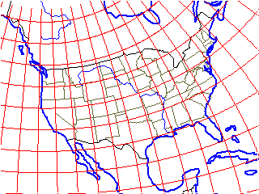
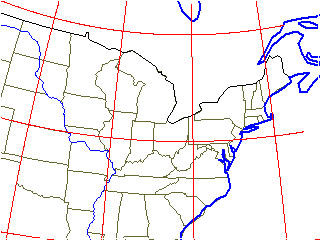
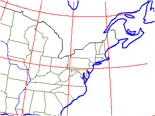
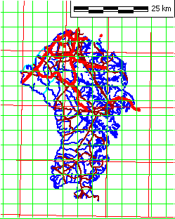

Lat/long graticule in red
Lat/long graticule in red
Lat/long graticule in red


The Zone 17 grid would parallel the map edges
With a UTM map, you must insure that you are in the correct UTM zone for your data. There will be only a slight difference in the adjacent zone, but as you move farther away the distortion will increase.
On the maps below, there will be one meridian that will be vertical on the map, the central meridian for the UTM zone. The others will curve inward toward this meridian. The graticule, which likes to use even numbers, like every 5 or 10 degrees, may not correspond with the central meridians, which are spaced 6 degrees apart.
| UTM zone 10 | UTM zone 17 | UTM zone 18 |
|
 |
 |
 |
| UTM zone 10, which is correct for Seattle. Lat/long graticule in red |
UTM zone 17, which is one zone west of
Annapolis. Lat/long graticule in red |
UTM zone 18, which is correct for Annapolis. Lat/long graticule in red |
|
|
 |
|
| Lat/long graticule in red, Zone 18 UTM grid
in green The Zone 17 grid would parallel the map edges |
Lat/long graticule in red, Zone 18 UTM grid in green |
Last revision 9/23/2009